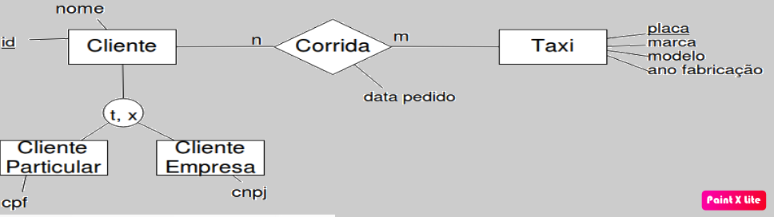

Este curso está dividido em quatro módulos:
1 - Linguagem de Definição de Dados (DDL)
Aprenda a definir esquemas de relação, excluir relações e modificar
esquemas de banco de dados.
2 - Linguagem de Manipulação de Dados (DML)
Domine as habilidades para inserir, excluir e modificar dados, bem
como a linguagem de consulta. A linguagem de consulta é inspirada na
Álgebra Relacional.
3 - Linguagem de Controle de Dados (DCL)
Explore como gerenciar aspectos de controle de acesso entre usuários e
os dados no banco de dados.
4 - Linguagem de Transação de Dados (DTL)
Adquira conhecimento sobre o gerenciamento de aspectos relacionados a
transações de dados.
<nome_do_banco><tabela> ( <campo1> <tipo>,
[..., <campon> <tipo>]
PRIMARY KEY <coluna>
FOREIGN KEY <coluna> REFERENCES <tabela_ref>(<coluna_ref>) )
PRIMARY KEY: Restrição de chave primária
FOREIGN KEY: Restrição de chave estrangeira
Tipos de Domínios Básicos: char(n), varchar(n), int, real, double, float, boolean, date, etc.
Outras Restrições: NOT NULL, UNIQUE, CHECK

● Script para criação do banco Sistema de Taxi
CREATE DATABASE sistema_taxi USE sistema_taxi
CREATE TABLE cliente( id VARCHAR(4), nome VARCHAR(80), PRIMARY KEY(id)
);
CREATE TABLE cliente_particular(
id VARCHAR(4),
cpf VARCHAR(14),
PRIMARY KEY(id),
FOREIGN KEY(id) REFERENCES cliente(id) );
CREATE TABLE cliente_empresa( id VARCHAR(4),
cnpj VARCHAR(18),
PRIMARY KEY(id),
FOREIGN KEY(id) REFERENCES cliente(id) );
CREATE TABLE taxi (
placa VARCHAR(7),
marca VARCHAR(30),
modelo VARCHAR(30),
anofab INTEGER,
PRIMARY KEY(placa)
);
CREATE TABLE corrida (
cliid VARCHAR(4),
placa VARCHAR(7),
dataPedido DATE,
PRIMARY KEY(cliid,
placa, dataPedido),
FOREIGN KEY(cliid) REFERENCES cliente(id),
FOREIGN KEY(placa) REFERENCES taxi(placa)